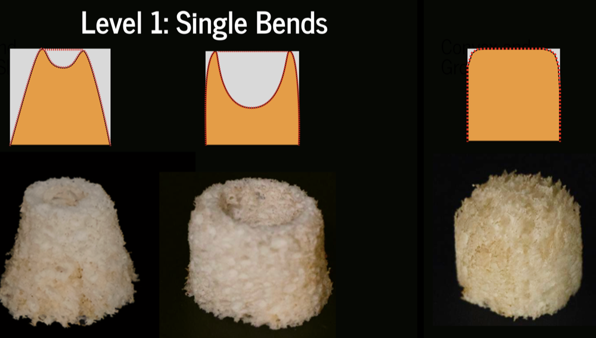

Level 1: Single Bends
The Level 1: Single Bends section of the Shapes design space focuses on creating shapes through the rotation of a surface, with an emphasis on controlling single curvature surfaces. In this process, the shape is generated by rotating a surface 360 degrees around an axis, forming a rotational body. This method is based on the principle of controlling single curvature, where the surface is bent along a single axis, allowing the creation of simple yet dynamic forms. The technique enables designers to intuitively validate the principles of vertical expansion and linear deformation, laying the foundation for basic volume filling. By adjusting the curvature and the axis of rotation, designers can create a variety of units with different forms, providing flexibility in shaping and maintaining structural consistency.

Level 1: Single Bends
Process
- Create a Base Cylinder Model: Begin by creating a cylinder in your design software. This cylinder will serve as the base shape for the final object. You can define the size of the cylinder based on the desired dimensions of your final shape.
- Draw a Single Curvature Curve: On the top surface of the cylinder, draw a single curvature curve. This curve represents the path along which the surface will be bent. A single curvature means that the curve has a consistent curvature throughout, creating a smooth and continuous surface when rotated. You can experiment with different curvatures to get the desired effect.
- Rotate the Curve 360 Degrees: Use your design tool to rotate the single curvature curve 360 degrees around the cylinder's central axis. This process will create a rotational body that forms a continuous surface based on the curve. The surface will have a single, consistent curvature that wraps around the cylinder. This technique is used to create dynamic, smooth shapes, as the curve's geometry influences the final surface.
- Cut the Shape from the Cylinder: Once the rotational surface is created, it's time to use the cutting tool to trim away the unnecessary material from the cylinder. The cutting path will follow the rotational surface, and the result will be a unique shape based on the geometry of the curve. This step allows you to extract the desired 3D shape from the original cylinder.
- Final Shape: After the cutting process is complete, you will have a shape with a smooth, single curvature surface. This final 3D shape is a product of the single curvature curve, rotated around the cylinder, and cut to reveal the final geometry. The surface will maintain the curvature throughout the shape, ensuring consistency and structural integrity.